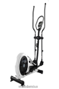
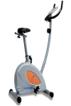
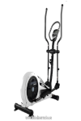
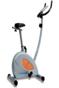

En este apartado hemos publicado tablas de ejercicios de gimnasia para diferentes objetivos. Cada objetivo tendrá varias tablas adaptadas al material disponible, experiencia y forma física del visitante. Estas tablas de gimnasia están diseñadas para personas sin ningún tipo de enfermedad del aparato locomotor. Si padeces de problemas de espalda, cadera o de cualquier otro tipo consulta con tu medico antes de empezar a realizar ninguna actividad física. Pregunta sobre los ejercicios que puedes realizar y los que no puedes realizar.
El entrenamiento de musculación con pesas, presenta como característica principal su gran capacidad de adaptación a la morfología y condiciones físicas del practicante. Es conveniente que en la medida de lo posible, ese trabajo, esté supervisado por un entrenador personal. Antes de comenzar la tabla conviene realizar un calentamiento previo, que consistirá en un par de minutos de trote sobre el terreno elevando bien las rodillas, un par de series de 20 repeticiones de flexiones de piernas sin peso, elevaciones de brazos y molinetes sin peso, y una serie del primer ejercicio de la tabla efectuada con la mitad del peso adecuado y el doble de repeticiones (esta serie no se contabilizar entre las marcadas en la rutina).


 


